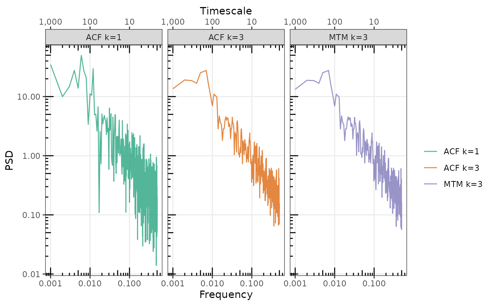
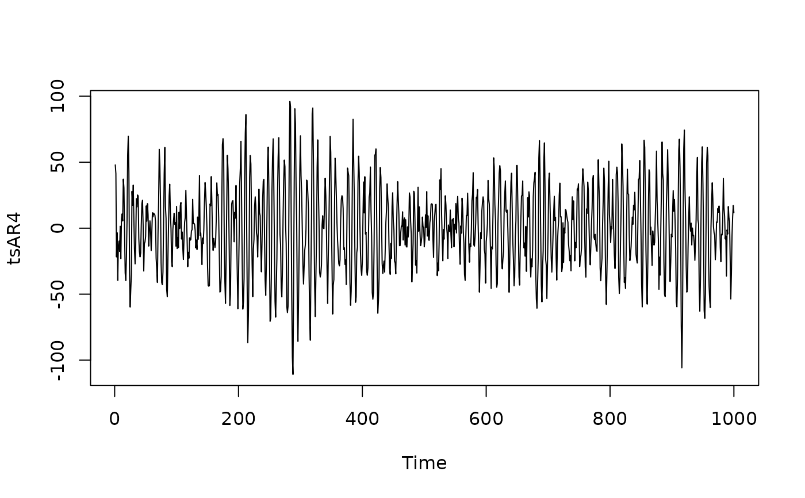
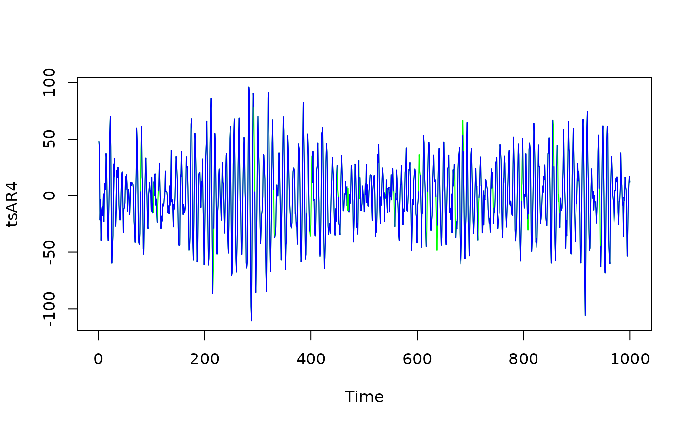

Estimate Power Spectra via the Autocovariance Function With Optional Slepian Tapers
SpecACF.RdEstimates the power spectrum from a single time series, or the mean spectrum of a set of timeseries stored as the columns of a matrix. Timeseries can contain (some) gaps coded as NA values. Gaps results in additional estimation error so that the power estimates are no longer chi-square distributed and can contain additional additive error, to the extent that power at some frequencies can be negative. We do not have a full understanding of this estimation uncertainty, but simulation testing indicates that the estimates are unbiased such that smoothing across frequencies to remove negative estimates results in an unbiased power spectrum.
Usage
SpecACF(
x,
deltat = NULL,
bin.width = NULL,
k = 3,
nw = 2,
demean = TRUE,
detrend = TRUE,
TrimNA = TRUE,
pos.f.only = TRUE,
return.working = FALSE
)Arguments
- x
a vector or matrix of binned values, possibly with gaps
- deltat, bin.width
the time-step of the timeseries, equivalently the width of the bins in a binned timeseries, set only one
- k
a positive integer, the number of tapers, often 2*nw.
- nw
a positive double precision number, the time-bandwidth parameter.
- demean
remove the mean from each record (column) in x, defaults to TRUE. If detrend is TRUE, mean will be removed during detrending regardless of the value of demean
- detrend
remove the mean and any linear trend from each record (column) in x, defaults to FALSE
- pos.f.only
return only positive frequencies, defaults to TRUE If TRUE, freq == 0, and frequencies higher than 1/(2*bin.width) which correspond to the negative frequencies are removed
See also
Other functions to estimate power spectra:
SpecMTM()
Examples
set.seed(20230312)
# Comparison with SpecMTM
tsM <- replicate(2, SimPLS(1e03, 1, 0.1))
spMk3 <- SpecACF(tsM, bin.width = 1, k = 3, nw = 2)
spMk1 <- SpecACF(tsM, bin.width = 1, k = 1, nw = 0)
spMTMa <- SpecMTM(tsM[,1], deltat = 1)
spMTMb <- SpecMTM(tsM[,2], deltat = 1)
spMTM <- spMTMa
spMTM$spec <- (spMTMa$spec + spMTMb$spec)/2
gg_spec(list(
`ACF k=1` = spMk1,
`ACF k=3` = spMk3,
`MTM k=3` = spMTM
), alpha.line = 0.75) +
ggplot2::facet_wrap(~spec_id)

## No gaps
ts1 <- SimPLS(1000, 1, 0.1)
sp_ACF1 <- SpecACF(ts1, 1, k = 1)
sp_MTM7 <- SpecMTM(ts1, nw = 4, k = 7, deltat = 1)
sp_ACF7 <- SpecACF(ts1, 1, k = 7, nw = 4)
gg_spec(list(
`ACF k=1` = sp_ACF1, `ACF k=7` = sp_ACF7, `MTM k=7` = sp_MTM7
))
# With Gaps
gaps <- (arima.sim(list(ar = 0.5), n = length(ts1))) > 1
table(gaps)
#> gaps
#> FALSE TRUE
#> 808 192
ts1_g <- ts1
ts1_g[gaps] <- NA
sp_ACF1_g <- SpecACF(ts1_g, 1)
sp_ACFMTM1_g <- SpecACF(ts1_g, bin.width = 1, nw = 4, k = 7)
gg_spec(list(
ACF_g = sp_ACF1_g,
ACF_g_smoothed = FilterSpecLog(sp_ACF1_g),
ACF_g_tapered = sp_ACFMTM1_g
), conf = FALSE) +
ggplot2::geom_abline(intercept = log10(0.1), slope = -1, lty = 2)
#> Warning: NaNs produced
#> Warning: log-10 transformation introduced infinite values.
#> Warning: NaNs produced
#> Warning: log-10 transformation introduced infinite values.
#> Warning: Removed 2 rows containing missing values or values outside the scale range
#> (`geom_line()`).
## AR4
arc_spring <- c(2.7607, -3.8106, 2.6535, -0.9238)
tsAR4 <- arima.sim(list(ar = arc_spring), n = 1e03) + rnorm(1e03, 0, 10)
plot(tsAR4)

spAR4_ACF <- SpecACF(tsAR4, 1)
spAR4_MTACF <- SpecACF(as.numeric(tsAR4), 1, k = 15, nw = 8)
gg_spec(list(#'
`ACF k=1` = spAR4_ACF,
`ACF k=15` = spAR4_MTACF)
)
## Add gaps to timeseries
gaps <- (arima.sim(list(ar = 0.5), n = length(tsAR4))) > 2
table(gaps)
#> gaps
#> FALSE TRUE
#> 969 31
tsAR4_g <- tsAR4
tsAR4_g[gaps] <- NA
plot(tsAR4, col = "green")
lines(tsAR4_g, col = "blue")

table(tsAR4_g > 0, useNA = "always")
#>
#> FALSE TRUE <NA>
#> 486 483 31
spAR4_ACF_g <- SpecACF(as.numeric(tsAR4_g), 1)
spAR4_MTACF_g <- SpecACF(as.numeric(tsAR4_g), 1, nw = 8, k = 15)
table(spAR4_ACF_g$spec < 0)
#>
#> FALSE TRUE
#> 485 15
table(spAR4_MTACF_g$spec < 0)
#>
#> FALSE
#> 500
gg_spec(list(
`ACF gaps k=1` = spAR4_ACF_g,
`ACF gaps k = 15` = spAR4_MTACF_g,
`ACF full k = 15` = spAR4_MTACF
)
)
#> Warning: NaNs produced
#> Warning: log-10 transformation introduced infinite values.
#> Warning: NaNs produced
#> Warning: log-10 transformation introduced infinite values.